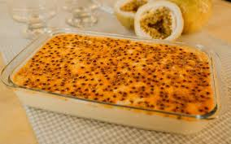

Receita de mousse de maracujá
Ingredientes:
- 1 lata de leite condensado
- 1 lata de creme de leite
- 1 lata de suco de maracujá (medida pela lata de leite condensado)
Modo de preparo:
- Em um liquidificador, bata o creme de leite, o leite condensado e o suco concentrado de maracujá.
- Em uma tigela, despeje a mistura e leve à geladeira por, no mínimo, 4 horas.
